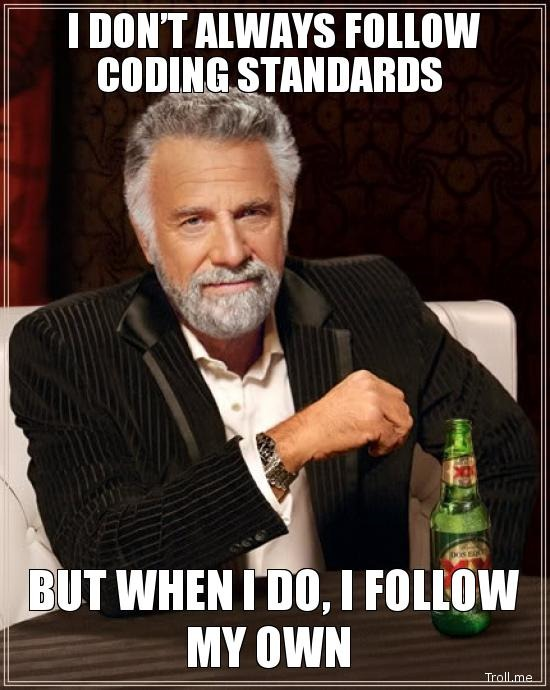

Many software engineers have gone through the thought process of answering the question: what is good code and how do you write good code? To this day, even I question myself if I did it correctly or in an effective way even though I am able to create the correct output. When it comes to correctly placing brackets, and having nice spacing, it is very nice to have because when each function is formatted the same, you don’t have to worry about figuring out where a function and conditional statements end, especially when functionality gets complex, stuff gets hard to keep track of.
With all these thoughts in mind, the idea of coding standards came to be. The coding standard was mode so that everyone’s code could be readable. As one of my previous professors has stated “You have to tell a good story when writing code.” Professor Mark Nelson was the professor I was referencing. He preached adding extra lines of code, breaking 1 line of functional code into multiple just to tell a better story. To this day I live by that, as writing an extra line or two is worth it especially when telling a story. Another thing I’d like to add is that one of my friends has also said “If we just willy nilly write code… it’s not gonna be good.” This is true because if we just write any code that works and gives the correct output, when referencing it or reusing its functionality it may be difficult if it isn’t readable.
The coding standard that we will be following in this class is ESlint with the IDE IntelliJ. ESlint allows users to write more secure, well-written, and organized code as a coding standard should. Specifically, ESlint gives many error messages and warnings for many different things that will help your code. This is really good because you are able to receive warnings to write stronger code such as the triple equal sign condition. I understand that this is very niche, however, it is important for employees to adapt to different companies coding standards so that everyone can read the same code.